General Description
mtb-xmc-ecat EtherCAT Middleware consists of all the elements necessary to start the EtherCAT slave development with the Beckhoff Slave Stack Code (SSC) including EtherCAT Slave Solution personality for the ModusToolbox™.
Quick Start
The Quick Start Guide section has an example that demonstrates the implementation of the EtherCAT slave node using the Beckhoff SSC tool to generate the slave stack code for XMC4300 Relax EtherCAT Kit. XMC4300 technical documentation
Project creation
- Create a new ModusToolbox™ Application with KIT_XMC43_RELAX_ECAT_V1. And choose Empty Project.
- Add the mtb-xmc-ecat and the mtb-xmc-emeeprom libraries using the Library Manager.
- To run the example, install the required tools: TwinCAT3 Master PLC and Slave Stack Code Tool. This QSG was tested with SSC Tool version 5.13.
- To set up the hardware, connect the Micro USB cable Debugger to X101 debug connector, and connect Ethernet cable to IN-port. Ensure that the XMC flash on your XMC4300 Relax EtherCAT Kit is cleaned up (Use J-Flash Lite for this).
- At this stage, the project requires the EtherCAT slave stack code, which for the XMC4300 can be generated by configuration files already in the project. These configuration files are included in the project.
Generating Slave Stack Code and ESI file
- Take the Excel Worksheet provided inside the example project to define your EtherCAT slave node interface. (After downloading the library through the Library Manager, you can find this file in the export folder.) The Beckhoff SSC-tool uses the excel sheet as an input to generate output-files. The generated EtherCAT slave stack code applies for XMC4300 and XMC4800. The generated EtherCAT Slave Information file (ESI) applies for the EtherCAT host, where the relevant interface information about the slave is stored.
- Double click the excel file to open it. Check the content of the file. The data defined in both I/O directions is 4x16-bit integers and 8x1-bit booleans. For more details on how to define your own interface, refer the EtherCAT Slave Design Quick Guide.pdf inside the SSC tool.
- Start the SSC Tool and create a new project: File >> New. Select the configuration file inside the example project and import it. Select the Infineon device inside the drop down list (Infineon XMC EtherCAT hardware) and click OK. Your project will be created.
- Check the settings inside SlaveInformation: vendor ID, vendor name, product ID and product code are customer-specific and are used by the host to identify the slave. Define the revision number, serial number, device name, and HW/SW version per your needs. The vendor ID/name and product code assigned to Infineon may be used for the evaluation purpose only. For production, your own vendor ID/name assigned by the EtherCAT Technology Group is mandatory.
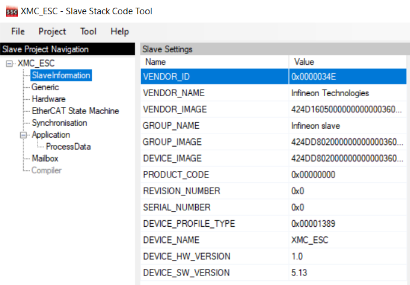
- Import the EXCEL-sheet, which defines the interface of your EtherCAT node. (After downloading the library through the Library Manager, you can find this file in the export folder.) Select the EXCEL-file provided inside the example project. Tool >> Application >> Import
- Click Project >> Create new Slave Files to start file generation. Adapt the the destination folder for the EtherCAT slave Stack Code and the ESI file. For this example, the default settings are recommended.
- Check the availability of the generated slave stack code.
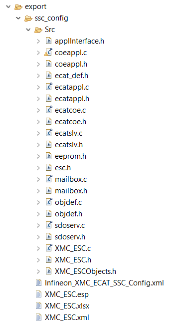
- Inside the generated file XMC_ESC.c, the link to your application must be implemented. Modify the source code accordingly, which copies the application data to/from ESC memory to the local application memory:
BEFORE
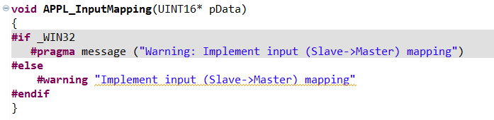
AFTER
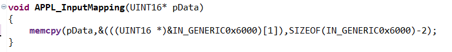
Code:
memcpy(pData,&(((UINT16 *)&IN_GENERIC0x6000)[1]),SIZEOF(IN_GENERIC0x6000)-2);
BEFORE
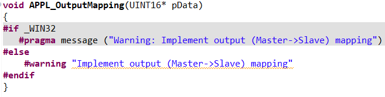
AFTER
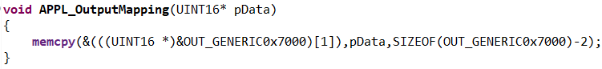
Code:
memcpy(&(((UINT16 *)&OUT_GENERIC0x7000)[1]),pData,SIZEOF(OUT_GENERIC0x7000)-2);
Inside the generated file XMC_ESC.c file, the function APPL_Application is implemented to handle the input and output. Inside main.c of the example, the function
void process_app(TOBJ7000 *OUT_GENERIC, TOBJ6000 *IN_GENERIC);
implements the mapping of the input/output data to buttons and LEDs. Therefore, modify the function APPL_Application to call process_app in the following way:
BEFORE
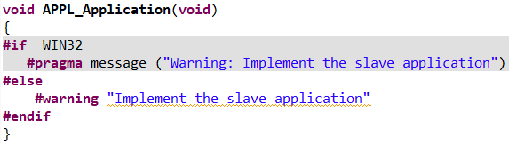
AFTER
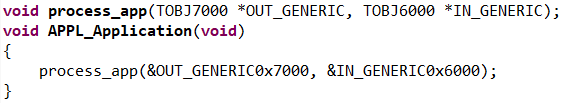
Code:
process_app(&OUT_GENERIC0x7000, &IN_GENERIC0x6000);
Within the slave stack code, the function process_app is called. To process the binary output data (master -> slave) to set the LED1 "XMC4300 Relax EtherCAT Kit". The states of the BUTTON1 is checked and propagated to the input data (slave -> master).
HW Configuration in Device Configurator
HW resources used in this QSG must be configured in the Device Configurator:
- EtherCAT
- CCU4 for timer
- EEPROM
- One pin for button and two LED pins
If a different alias name is selected instead of the expected resources name in the Device Configurator, the code snippets must be updated.
| Resource | Name |
| Led Pins | CYBSP_USER_LED1/CYBSP_USER_LED2 |
| Button Pin | CYBSP_USER_BTN |
| ERU OGU for SYNC 0 | ECAT_ERU_SYNC0 |
| ERU OGU for SYNC 1 | ECAT_ERU_SYNC1 |
Recommended EtherCAT (ECAT) configuration
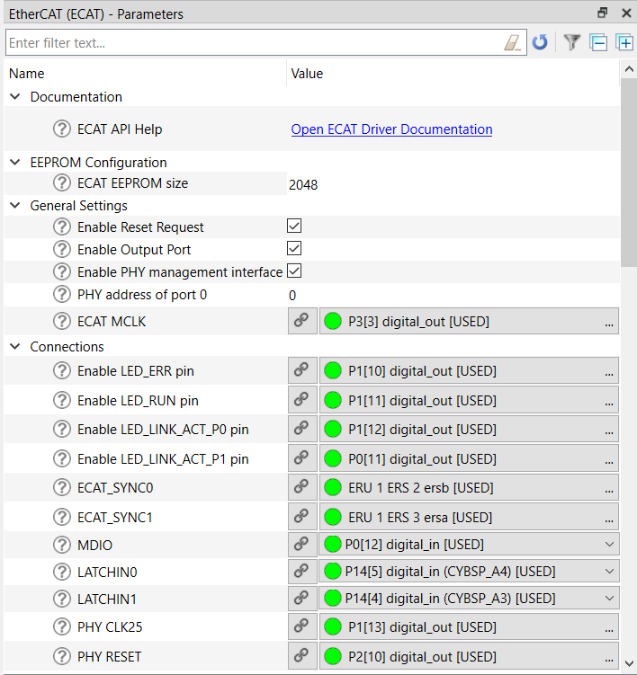
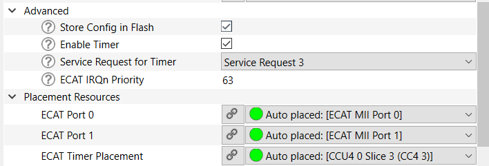
Recommended ECAT MII Port 0 configuration
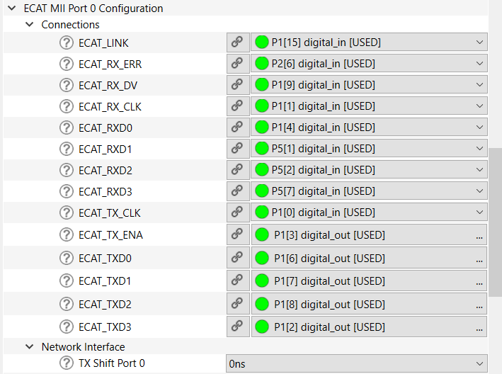
Recommended ECAT MII Port 1 configuration
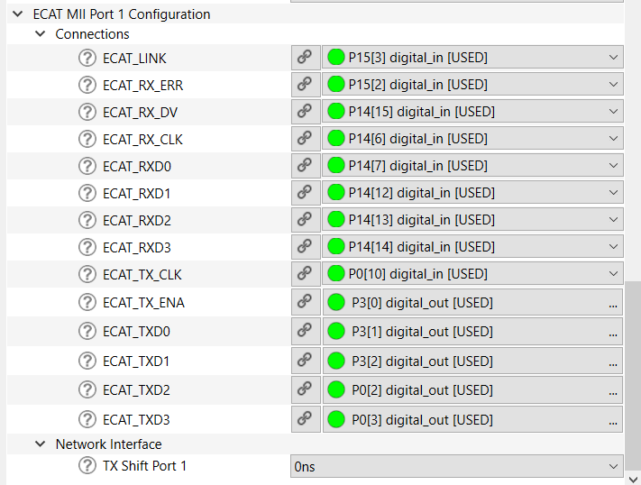
Recommended Button and Led Pins configuration
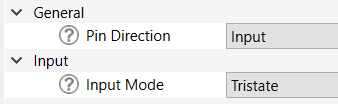
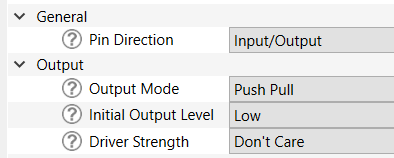
The EVENT_DETECTOR, EVENT_GENERATOR and INTERRUPT APPs are used inside this example to connect the sync_out_0 and sync_out_1 of the ECAT_SSC APP to the interrupt service routines of the SSC-stack.
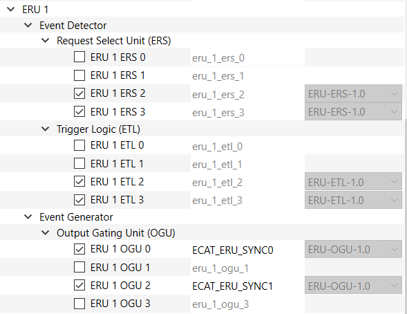
- Note
- After enabling the ECAT_SYNC0/ECAT_SYNC1 to ERU ERS you should do some additional steps (For example ECAT_SYNC0 connected to ERU1 ERS2):
- Go to the ERU 1 ERS 2 and check that ERU 1 ETL 2 was assigned for Event Trigger Logic.
- Go to the ERU 1 ETL2 and check that ERU 1 ERS 2 was assigned for Event Request Select Unit. Then, assign ERU 1 OGU to one of the 4 triggers. For example, assign ERU 1 OGU 0 to Trigger 0.
- Go to all resources and find ERU 1 OGU 0 and give it the name: ECAT_ERU_SYNC0.
EtherCAT slave node code example
Common code
- Include the required headers.
#include "cybsp.h"
#include "cy_utils.h"
#include "mtb_xmc_ecat.h"
#include "XMC_ESCObjects.h"
#include "ecatappl.h"
#include "applInterface.h"
- Add the common define to the project.
#define MAP2LEVEL(x) ((x==0)?XMC_GPIO_OUTPUT_LEVEL_LOW:XMC_GPIO_OUTPUT_LEVEL_HIGH)
- Add the function for data processing.
void process_app(TOBJ7000 * OUT_GENERIC, TOBJ6000 * IN_GENERIC)
{
XMC_GPIO_SetOutputLevel(CYBSP_USER_LED1_PORT, CYBSP_USER_LED1_PIN, MAP2LEVEL(OUT_GENERIC->OUT_GEN_Bit1));
XMC_GPIO_SetOutputLevel(CYBSP_USER_LED2_PORT, CYBSP_USER_LED2_PIN, MAP2LEVEL(OUT_GENERIC->OUT_GEN_Bit2));
if (XMC_GPIO_GetInput(CYBSP_USER_BTN1_PORT, CYBSP_USER_BTN1_PIN))
{
IN_GENERIC->IN_GEN_Bit1 = 1;
}
else
{
IN_GENERIC->IN_GEN_Bit1 = 0;
}
}
- Add EtherCAT Interrupt Routine for SYNC0.
void SYNC0IRQHandler(void)
{
Sync0_Isr();
}
- Add EtherCAT Interrupt Routine for SYNC1.
void SYNC1IRQHandler(void)
{
Sync1_Isr();
}
- Add enabling of user-specific EtherCAT Interrupt Routines.
{
NVIC_EnableIRQ(ECAT_ERU_SYNC0_IRQN);
NVIC_EnableIRQ(ECAT_ERU_SYNC1_IRQN);
}
__WEAK void mtb_xmc_enable_user_int(void)
Definition: mtb_xmc_ecat.c:201
- Add disabling of user-specific EtherCAT Interrupt Routines.
{
NVIC_DisableIRQ(ECAT_ERU_SYNC0_IRQN);
NVIC_DisableIRQ(ECAT_ERU_SYNC1_IRQN);
}
__WEAK void mtb_xmc_disable_user_int(void)
Definition: mtb_xmc_ecat.c:207
- Add the mtb_xmc_ecat_init() function to the main() after cybsp_init() function.
uint32_t mtb_xmc_ecat_init(void)
Definition: mtb_xmc_ecat.c:171
Project execution
- Build and program the project.
- If the previous steps were correct, the Ethernet IN-port should be flashing.
- After starting the TwinCAT System Manager from the Windows start menu. Right Click I/O-Devices and select "Add New Item". Double-click it to create an EtherCAT master device.
- Select and search the network adapter you want to use.
- Note
- Application hint: If the device is not found, install the respective device driver - follow the instructions by TwinCAT, clicking the Compatible Devices button.
- Right-click the EtherCAT master and select "Scan Boxes".
- Now you can observe that the slave appears as a node on the EtherCAT master bus. The RUN-LED is flashing indicating the PREOP state.
- EtherCAT master view: Inside the EtherCAT master online state you see the queued frames counting up, the connected slave and its PREOP state. EtherCAT slave view: The slave PREOP state is indicated within the TwinCAT system manager.
- Set the master device to free run mode.
- EtherCAT slave view: Online status of slave shows the slave in the OP state. EtherCAT master view: The master online status shows the slave in the OP state; Frames are not queued; Cyclic counter is incrementing. XMC4300 Relax EtherCAT Kit: RUN-LED is static turned on indicating the OP state.
- While pushing BUTTON1 on XMC4300 Relax EtherCAT Kit, the button state is updated on the host. The IN_GEN_Bit1 state changes in accordance with the state of BUTTON1.
- Right-click OUT_GEN_Bit1 of the slave node and select "Online Write" inside the context menu. Change the value from 0 to 1 to switch on LED1 from 1 to 0 to switch off LED1. LED1 XMC4300 Relax EtherCAT Kit is turned on/off according to the OUT_GEN_Bit1 setting.
Configuration Considerations
General information
- This middleware has a personality that generates code called in the HW_Init() function.
MTB_XMC_ECAT_Initialization();
- Functions mtb_xmc_ecat_eeprom_init(), mtb_xmc_ecat_timer_start() and HW_Init() are provided but all of them are called in the mtb_xmc_ecat_init() function.
Pins initialization To initialize the pins in this middleware, separate functions are used for each pin (the name of each function can be found in the preview code of the personality and they are distributed between the main and two port personalities). The recommended initialization sequence is shown below and you can see our realization in the HW_Init() function but you can change it in your own way (optional):
- gpio_init_p0_link_status();
- gpio_init_p0_rxd3();
- gpio_init_p0_rxd2();
- gpio_init_p0_rxd1();
- gpio_init_p0_rxd0();
- gpio_init_p0_rx_dv();
- gpio_init_p0_rx_clk();
- gpio_init_p0_rx_err();
- gpio_init_p0_tx_clk();
- gpio_init_p1_link_status();
- gpio_init_p1_rxd3();
- gpio_init_p1_rxd2();
- gpio_init_p1_rxd1();
- gpio_init_p1_rxd0();
- gpio_init_p1_rx_dv();
- gpio_init_p1_rx_clk();
- gpio_init_p1_rx_err();
- gpio_init_p1_tx_clk();
- gpio_init_ecat_mdio();
Then you should call this function: MTB_XMC_ECAT_Initialization();
And then you continue with pins initialization:
- gpio_init_p0_txd3();
- gpio_init_p0_txd2();
- gpio_init_p0_txd1();
- gpio_init_p0_txd0();
- gpio_init_p0_tx_ena();
- gpio_init_p1_txd3();
- gpio_init_p1_txd2();
- gpio_init_p1_txd1();
- gpio_init_p1_txd0();
- gpio_init_p1_tx_ena();
- gpio_init_ecat_phy_clk25();
- gpio_init_ecat_mclk();
- gpio_init_p0_led_link_act();
- gpio_init_p1_led_link_act();
- gpio_init_ecat_led_run();
- gpio_init_ecat_led_err();
- gpio_init_ecat_phy_reset();
- Note
- If you connect LATCHIN and SYNC signals to pins, don't forget to initialize their connection in your application using these functions as well:
- gpio_init_ecat_latchin0();
- gpio_init_ecat_latchin1();
- gpio_init_ecat_sync0();
- gpio_init_ecat_sync1();
ECAT_TIMER_INT usage
In the code, check is used if the ECAT_TIMER_INT define is set to 1. (The ECAT_TIMER_INT define is already set to 1 in the SSC_Config file, you can find it in the export folder. Also, you can change its value.) The code inside this condition executes and we call the ECAT_CheckTimer() function. If the switch ECAT_TIMER_INT is 0, the watchdog control is implemented without using interrupts. So, use the HW_GetTimer() function.
- Note
- 1. The Middleware outputs a log using the XMC_ASSERT() function.
-
2. This Middleware works only with the slave stack code generated by Beckhoff SSC tool. (Detailed instruction: Generating Slave Stack Code and ESI file section)
mtb-xmc-ecat Package Structure
The Middleware structure:
- export: Contains configuration files for slave stack code generation.
- device-info: Contains an EtherCAT personality.
- docs: Contains the API Reference Guide, mtb-xmc-ecat User Guide & Reference Manual and other supporting documentation.
Changelog
| Version | Changes | Reason for Change |
| 1.0.0 | Initial release of mtb-xmc-ecat middleware. | |